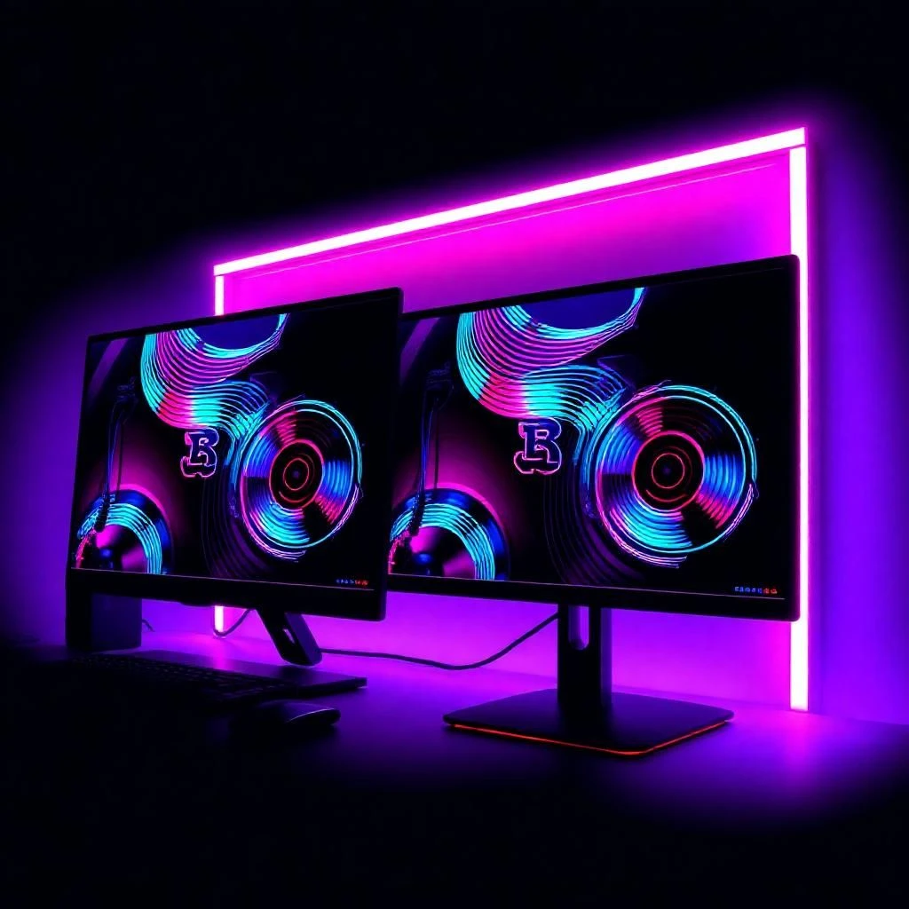
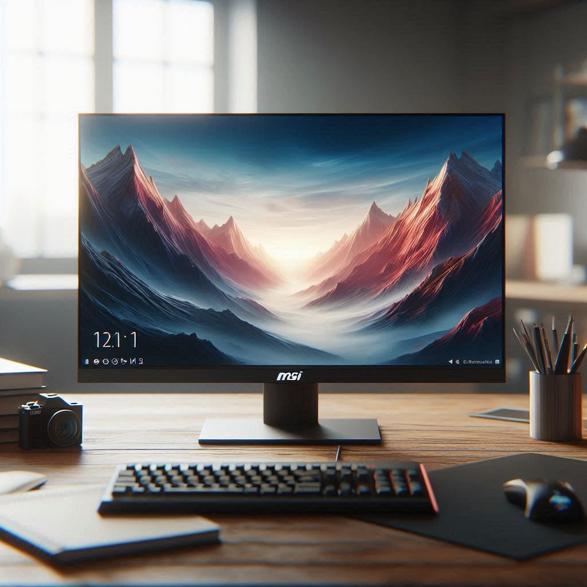

Los 5 mejores monitores calidad precio en 2025

Resumen:
- ASUS VG28UQL1A: Perfecto para quienes buscan 4K y un alto rendimiento en PC y consolas.
- MSI MPG 242R X60N: Ideal para jugadores competitivos con 600 Hz, muy rápido para juegos exigentes.
- Samsung Odyssey Neo G7 32": Gran opción para quienes quieren 4K y una pantalla grande para juegos y multimedia.
- Dell S3222DGM: Monitor curvado con buena relación calidad-precio, perfecto para simuladores y juegos de acción.
- AOC Gaming C27G2ZU: Asequible y rápido, ideal para juegos FPS con 240 Hz y curvatura envolvente.
1.ASUS VG28UQL1A
2. MSI MPG 242R X60N

- Precio:
- Tamaño: 24"
- Resolución: FHD
- Frecuencia: 600Hz
- Panel: Rapid TN
- Tiempo de respuesta: 0.5ms
- Tecnología SYNC: FreeSync Premium
Vídeo de review del primer monitor: